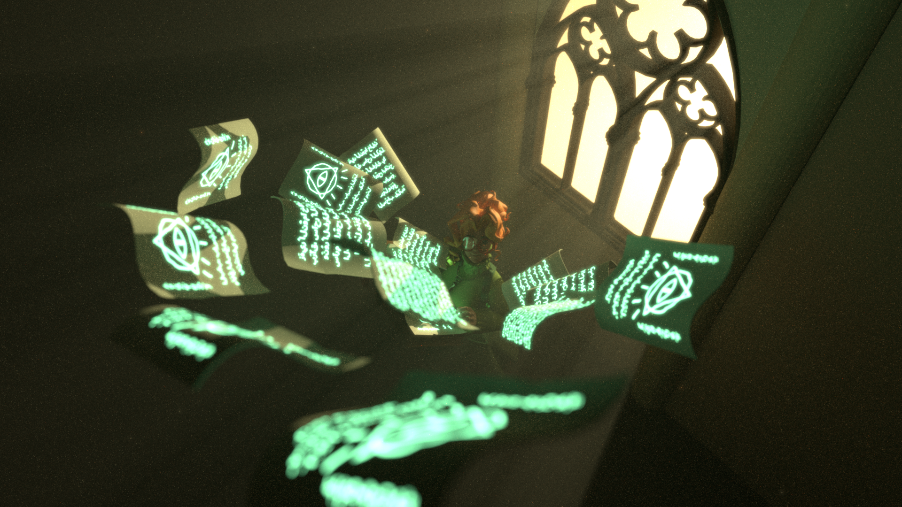
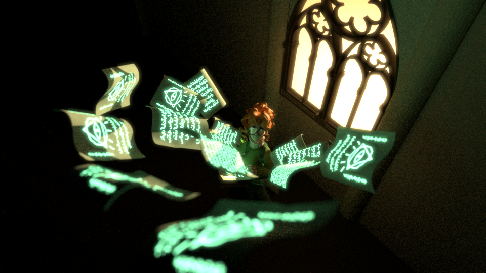
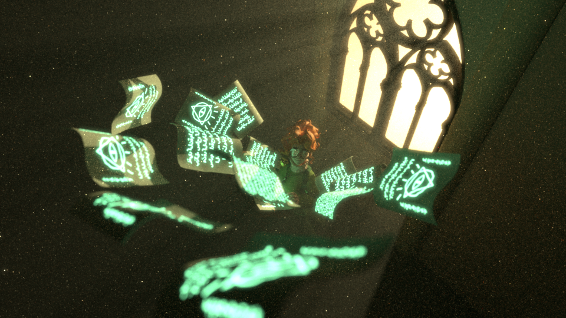
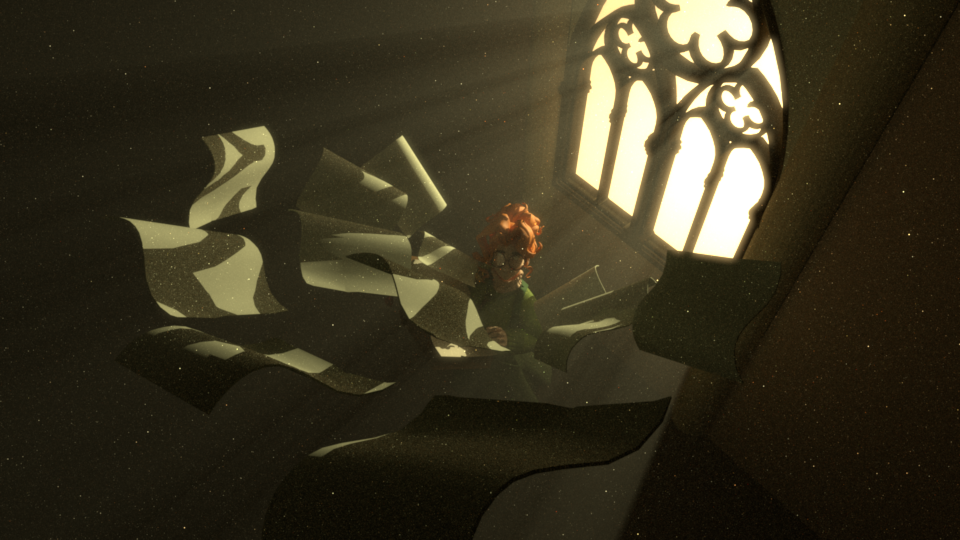
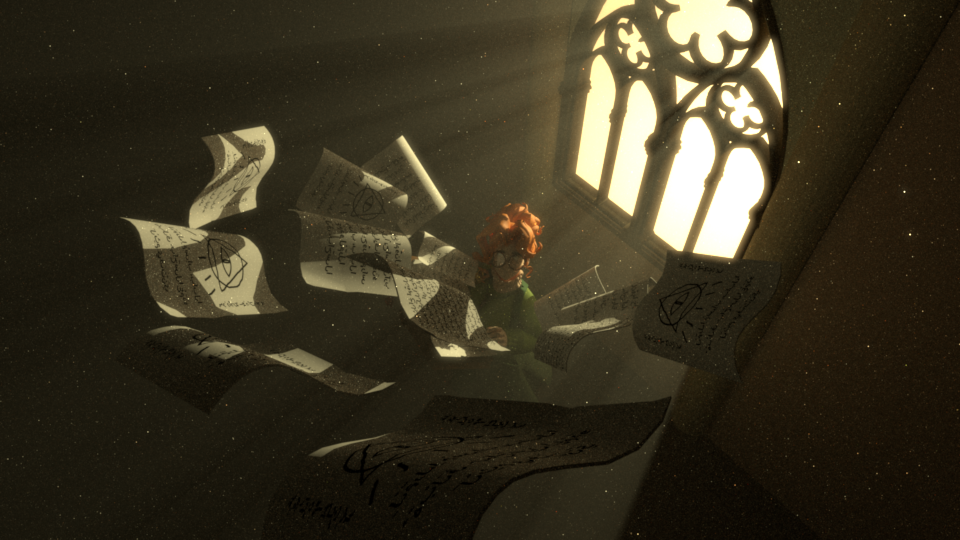
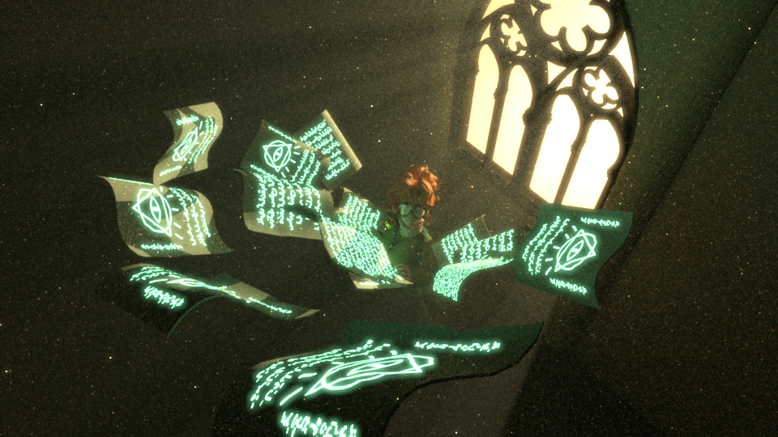
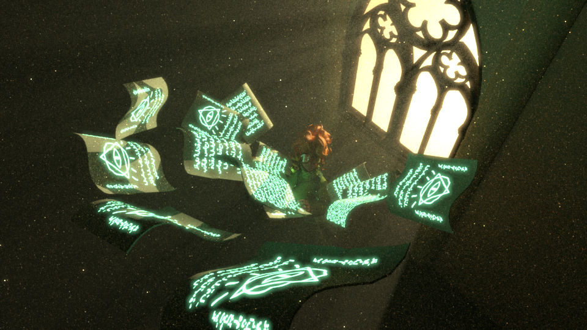
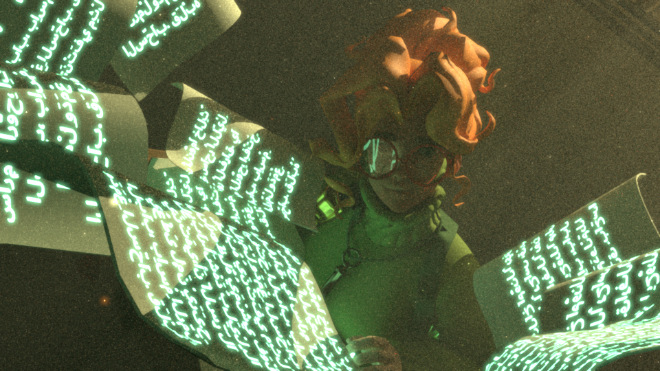
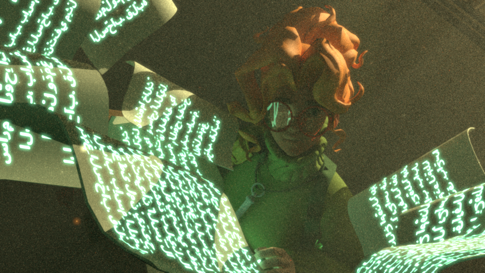
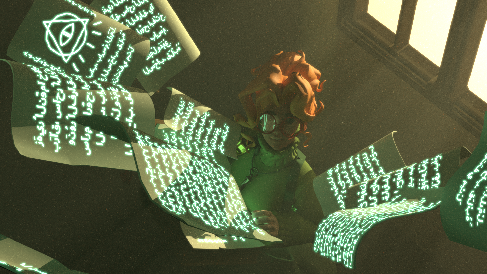

TECH ART & GRAPHICS / RENDERING STUDY
THE PAIGE
A scene-led graphics study exploring how light, materials, depth, and denoising shape a final image.
Final render
A figure surrounded by floating, luminous pages beneath a bright window. This image anchors the rendering comparisons below.

Homogeneous volumetric rendering
Comparing the same composition with and without a participating medium shows how visible light and atmospheric haze add depth around the window, character, and pages.


Comparison renders: 2048 spp
Texture mapping & textured light
Original glyph textures are shown alongside the rendered result. In the comparison, the papers first receive their markings; the textured-light pass then makes the symbols themselves part of the scene's illumination.


The original presentation also isolates the textured-light result at 2048 spp.
Depth of field
Depth of field shifts attention toward the center of the scene. The nearby pages soften while the character and illuminated midground remain the visual focus.


Comparison renders: 2048 spp
Metal BRDF
The close-up comparison isolates the character and surrounding pages to show the material-response change. The source presentation directs attention to the small reflective area around the character's eyewear.


Comparison renders: 2048 spp
Medium radiance denoiser
The last two comparisons use both a close crop and the full frame. They make it easier to inspect the treatment of noise across the illuminated pages, character, and atmospheric background.
Detail view

Full frame

The final render and comparison images are extracted from Jacky Pan's CS 5630 final presentation. This page reorganizes the material for web reading rather than reproducing slide layouts.
View original presentation ↗